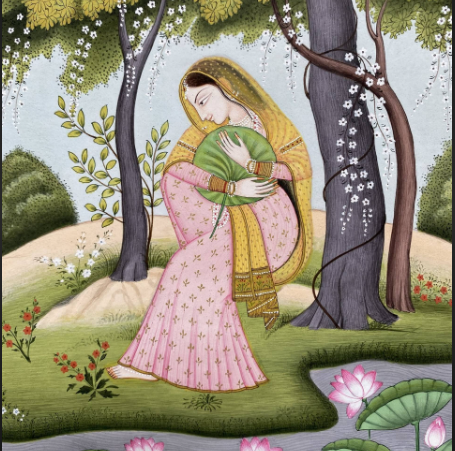

Miniature paintings are small yet highly detailed artworks created with delicate strokes and vibrant natural colors, reflecting India's rich cultural and artistic traditions.
1. Ancient Period (6th–10th Century):
- Early miniatures appeared in Buddhist palm-leaf manuscripts in Bihar and Bengal.
- Ajanta Cave frescoes influenced later miniature painting styles.
2. Medieval Period (11th–16th Century):
- Flourished under the Mughal Empire, especially during Akbar's reign, with Persian influence.
- Focused on royal courts, battles, and love stories.
3. Regional Schools (16th–19th Century):
- Rajput, Pahari, and Deccan schools emerged with distinct styles and themes.
4. Modern Era:
- Preserved in Rajasthan and adapted for exhibitions, decorative art, and souvenirs worldwide.
- Abdus Samad & Mir Sayyid Ali: Pioneers invited by Akbar, blending Persian and Indian styles.
- Basawan: Known for realistic portraiture during Akbar's reign.
- Sahibdin & Manohar: Masters of Rajput miniatures.
- Nainsukh: Famous Pahari painter for naturalistic and devotional art.
1. Small-scale with intricate detailing.
2. Natural colors from minerals, vegetables, and precious stones.
3. Themes include mythology, court life, devotion, and nature.
4. Painted on handmade paper, cloth, or ivory.
5. Styles include Mughal, Rajput, Pahari, and Deccan.
6. Bright, balanced colors with fine brushwork.